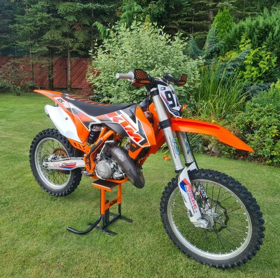
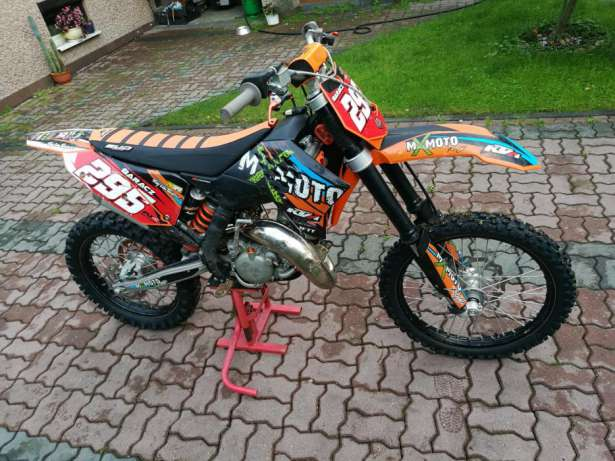
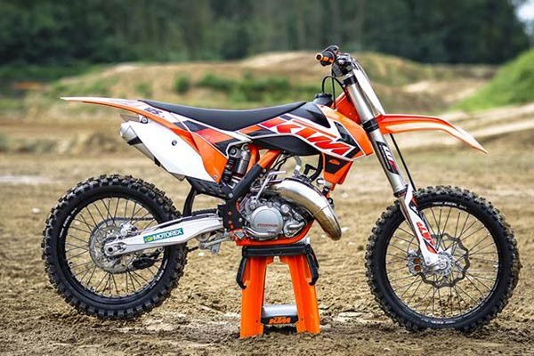

Ktm sx 125 Six Days
WERSJA SIX DAYS - International Six Days Enduro (ISDE) (Drużynowe Mistrzostwa Świata Zespołów Narodowych[1], do 1980 International Six Days Trials (ISDT)) potocznie zwane Sześciodniówką - doroczne drużynowe zawody motocyklowe enduro rozgrywane pod auspicjami Fédération Internationale de Motocyclisme (FIM), będące, zgodnie z regulaminem FIM, dorocznym testem niezawodności motocykli i umiejętności kierowców składające się z sześciu jednodniowych etapów rozgrywanych w kolejnych dniach.
SX 125 to obecnie najmniejszy motocykl terenowy w ofercie austriackiego KTM-a który zaraz po opuszczeniu fabryki może startować w motocrossowych zawodach klasy MX2. Jest niezwykle lekki i poręczny, , natychmiastowo zmienia kierunek jazdy. Mimo niewielkiej pojemności pod doświadczonym zawodnikiem potrafi naprawdę wiele, a wobec początkujących stawia naprawdę wysokie wymagania i nie wybacza błędów.
Prosta budowa silnika, 8 litrowy zbiornik paliwa, rama ze stalowych rur molibdenowo-chromowych i tylko najpotrzebniejszy osprzęt sprawiają że "na mokro" motocykl waży jedynie 90,5 kilograma. Nad niewielką masą czuwa prosty tarczowy układ hamulcowy na obu osiach znakomicie sprawdza się w warunkach torowych. Wszelkiego rodzaju wertepy są skutecznie tłumione przez zawieszenie od WP Suspension, które w pełni pozwala na wykorzystanie możliwości zarówno zawodnika jak i samej maszyny. Natomiast nisko umieszczone siedzisko stwarza dobre warunki dla niższych użytkowników, przy okazji nie wpływając negatywnie na prześwit i skok zawieszeń. Początkującym jeźdźcom życie ułatwi hydrauliczne sprzęgło o bardzo małej sile nacisku oraz elektryczny rozrusznik jednostki napędowej, który choć trochę zmniejszy frustrację podczas pierwszych startów i kolejnych wywrotkach.
Na początku kariery SX 125 miał bardzo dużą konkurencję, praktycznie każdy liczący się producent posiadał dwusuwową maszynę tej klasy pojemnościowej. Obecnie Austriacy mogą czuć zagrożenie jedynie ze strony Yamahy, choć według wielu KTM prowadzi się bardziej intuicyjnie i odznacza się lepszym przyspieszeniem w średniej partii obrotów.
Pierwsza wersja tego motocykla pojawiła się w 2003 roku i każdego roku na rynek wypuszczana zostaje kolejna, bardziej unowocześniona. Wyposażony został w jednocylindrowy, dwusuwowy silnik, chłodzony cieczą o pojemności, jak nazwa wskazuje 125 cm3 oraz w 5 – stopniową w 2003 roku i 6-stoponiową od 2004 roku, skrzynię biegów. W konstrukcji zastosowano hamulce jednotarczowe (zarówno przedni jak i tylny) oraz klasyczne zawieszenie - przednie w postaci widelca teleskopowego, tylne wahacza wleczonego. Zawieszenie wyprodukowane zostało przez firmę WP. Całość opiera się na ramie spawanej z rur chromowo molibdenowych.
Kliknij aby wrócić do strony głównej !


